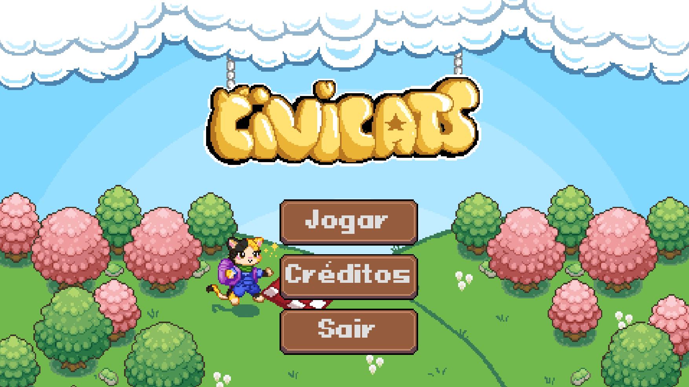

Letramento Lúdico
Transforma conceitos cívicos abstratos em decisões interativas. O jogador aprende na prática que escolhas individuais moldam o bem-estar coletivo.
Uma ferramenta educativa digital em 2D que transforma o ensino cívico em vivência prática: da microcidadania escolar ao voto direto em plebiscitos e julgamentos populares.

Motor Godot 4 & Aseprite: Gráficos em pixel art de alto desempenho, física responsiva e funcionamento autônomo sem travar em computadores escolares.
A união prática entre ciência da computação, design inclusivo e formação cidadã.
Transforma conceitos cívicos abstratos em decisões interativas. O jogador aprende na prática que escolhas individuais moldam o bem-estar coletivo.
Paletas de alto contraste testadas contra barreiras visuais, feedback sonoro padronizado em todas as ações e navegação facilitada por atalhos diretos.
Arquivos portáteis independentes (.exe e .apk) que funcionam perfeitamente sem conexão com a internet, garantindo acesso universal a qualquer escola.